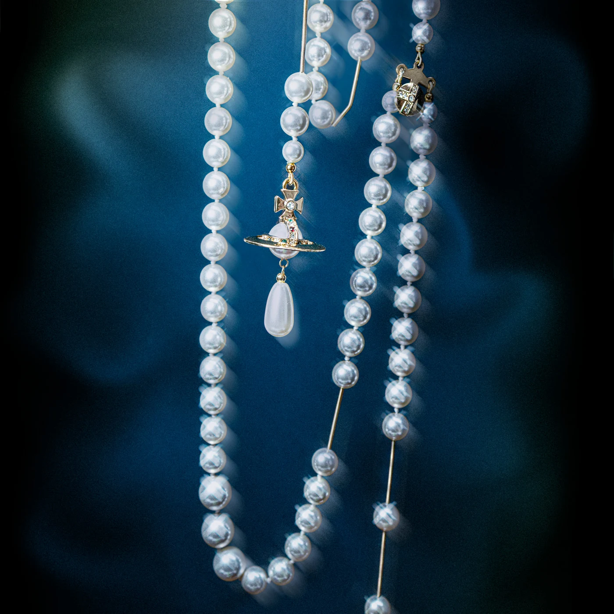
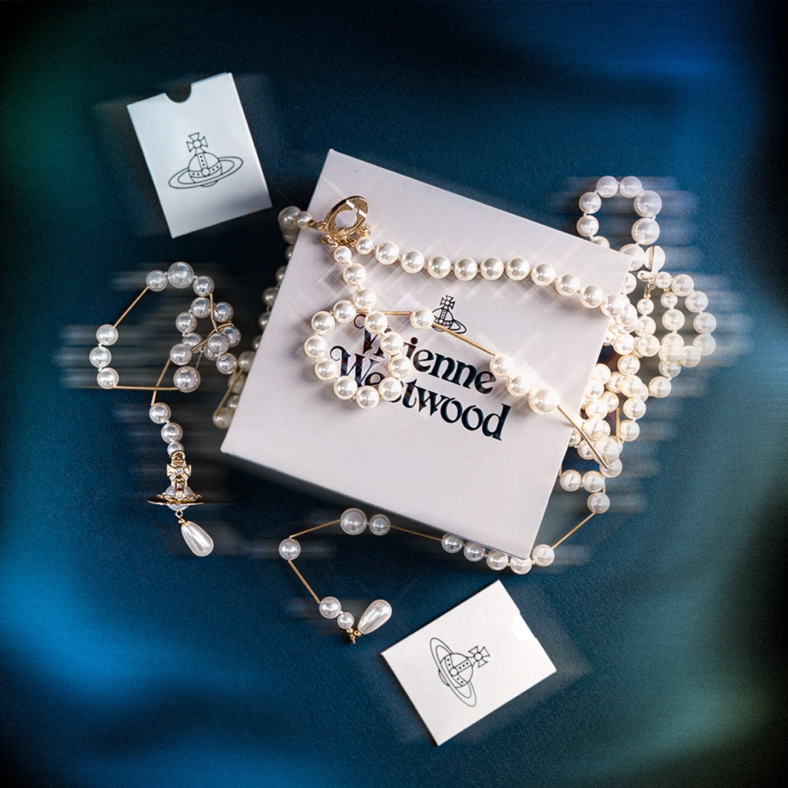
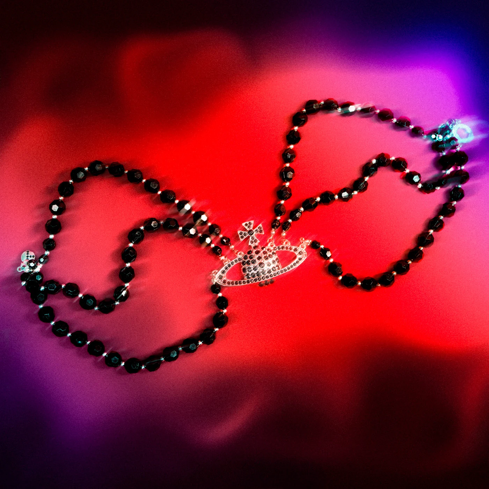

Product photography
Vivienne Westwood jewellery
Pearls, orbs and a little bit of punk. I took my own Vivienne Westwood jewellery into the studio, played with coloured light and let the pearls do the talking.
Two colours, two moods, one dreamy series, edited in my own style.
Soft blue
The dreamy side
Inspired by Westwood's bridal style: soft blue and white tones, a vintage look and a dreamy touch.
Orb & pearls
A pearl necklace with the iconic orb pendant on a deep blue backdrop. Soft, elegant and pure, the glow of the pearls makes it feel almost unreal.
Strings of light
Glowing pearl strings in soft blue light. Simple, but powerful: jewellery you never want to take off.
All together
Pearl necklaces around the original box. Every piece has its own story, together they form one whole, softened by a dreamy gradient.
Bright red
The rebel side
Inspired by Westwood's daring, alternative style that was never afraid to stand out.
Two worlds
A silver statement necklace and a black pearl choker on fiery red. Elegance and rebellion side by side, making each other stronger.
Hearts on fire
Heart earrings that almost melt into the red behind them. Bold and wild, yet precious, with a purple glow that pulls you in.
Black pearls
Dark pearls on a bright red surface. The red stands for courage, the black for strength and alternative beauty.